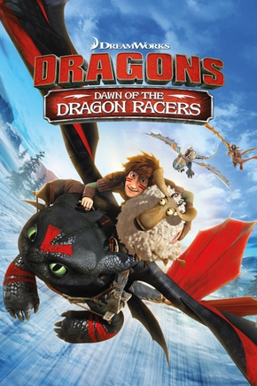

FILMES/SERIES DE COMO TREINAR O SEU DRAGAO
Como treinar o Seu Dragao (2010)
Como treinar o Seu Dragao 2 (2014)
Como treinar o Seu Dragao 3 (2019)

Como treinar o Seu Dragao
Corrida de Dragao (2015)
Como treinar o Seu Dragao
Corrida ate o Limite (2016)
Como treinar o Seu Dragao
Defensores de Berk (2013)